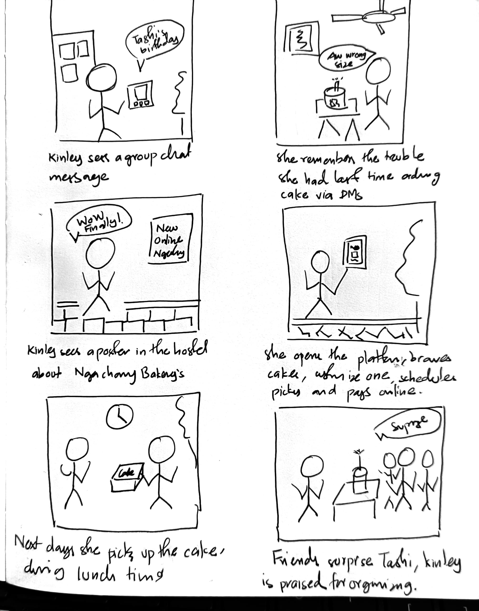

Project Overview
The Product
Ngachang Bakery is a modern, on-campus bakery at Gyalpozhing College of Information Technology (GCIT), offering customizable cakes for celebrations such as birthdays, promotions, and graduations. Unlike traditional bakeries in Bhutan that rely on social media for taking orders—leading to poor communication and limited customization—Ngachang Bakery aims to revolutionize the local ordering experience with a dedicated online platform that supports digital cake browsing, customization, and ordering.
The Problem Statement
Current cake-ordering methods involve contacting the bakery via social media or phone, which often leads to miscommunication, unconfirmed orders, and limited personalization. The lack of a digital interface also prevents efficient scheduling and data protection. Customers want an accessible and user-friendly way to place customized cake orders, with options to choose flavor, size, decorations, and preferred pickup times—all while maintaining control over their personal data.
The Goal
Develop a user-centric online ordering platform for Ngachang Bakery that enables the GCIT community to browse, customize, and pre-order cakes seamlessly. The platform will prioritize personalization, data privacy, and order transparency—aligned with Bhutan’s push for digital innovation and local entrepreneurship.
Responsibilities
User research, User persona, Problem statement, User journey map, Competitive audit, Ideation activitie, User flow, Storyboard, Low fidelity wireframe, Low fidelity prototypes, High fidelity mockups, High fidelity prototypes, Usability studies
1. Empathize (Understanding the Users)
User research: Summary
Users of Ngachang Bakery face key challenges such as inefficient and inconsistent communication through social media and phone calls, limited options for customizing cake orders, scheduling conflicts due to unplanned pickups, and concerns about data privacy when sharing personal details informally. These issues lead to order mistakes, reduced user satisfaction, and lower trust in the bakery’s current ordering process.
User Research: Pain Point
Inefficient Communication
Users rely on inconsistent messaging through social platforms, leading to missed or incorrect orders.
Customization Limitations
Customers cannot express detailed customizations (e.g., text on cake, themes, flavors) in a structured way.
Scheduling & Timing Conflicts
No structured pickup scheduling leads to delays, especially during peak occasions like exam weeks or club events.
Data Privacy Concerns
Personal data shared via messaging apps is not protected under structured policies.
Persona
Kinley
Problem statement:
Kinley, a student at GCIT, needs a mobile app to customize and schedule cake orders conveniently, as she often organizes hostel celebrations and has limited time to visit bakeries.
Sonam
Problem statement:
Sonam Wangmo, a lecturer at GCIT, needs a reliable online platform to place and customize bulk cake orders for college events, as her tight teaching schedule limits her ability to visit bakeries in person.
Ngachang
Problem statement:
Ngachang Lhamo, the manager of Ngachang Bakery in Mongar, needs a centralized digital system to manage and track custom cake orders efficiently, as managing orders through informal channels like DMs and calls leads to errors and inefficiencies.
User Journey
.png)
.png)
.png)
{kind=link}
{kind=link}
{kind=link}
2. Define
(HMW Questions and Point of View Statements)
Problem Statements (How Might We...)
- How might we let users customize cakes easily and accurately?
- How might we confirm and schedule cake pickups efficiently?
- How might we ensure secure handling of user data and payment information?
- How might we reduce errors in cake orders through clear UI steps?
- How might we create transparency in the order status for both user and bakery?
Point of View Statements
Kinley needs a platform to order personalized cakes without worrying about miscommunication or timing conflicts.
Faculty (Sonam, 32, Lecturer)Sonam needs a simple, reliable way to pre-order cakes for events without last-minute stress.
Bakery Owner (Lhamo, 31, Manager)Lhamo needs a digital interface to view, manage, and fulfill orders effectively.
{kind=link}
3. Ideate (Generating Solutions)
Crazy Eights Method
I used the Crazy Eights method to quickly sketch out eight distinct ideas for UI layout and functionality. This helped me rapidly explore a wide range of creative possibilities and identify promising design directions for the final solution.

Storyboard
To better understand the user's experience, I created a detailed storyboard. It illustrates the user's journey — from discovering the platform to placing and receiving an order. The full view gives a broad overview, while the close-up helps focus on specific touchpoints and emotions.
Full Storyboard
Close-Up View
Paper wireframe

I created paper wireframes for the homepage, upload, login, and signup pages to experiment with different ways of organizing the information. I took notes on each screen about what worked well and used those insights to develop the digital low-fidelity wireframes.
Digital wireframe
Next, I transitioned to Figma to design digital wireframes for all the screens of Ngachang. By applying a basic design system, I crafted low-fidelity wireframes that remained clean and well-structured. The homepage serves as a central hub, offering users quick access to their personalized dashboard. The bottom navigation bar provides options to explore cultural content, share personal stories, use the search feature, and seamlessly navigate between the app’s main sections.
Low-Fidelity Prototypes
The low-fidelity prototype illustrates the primary user flow within the app. After completing the digital wireframes, I enhanced them by adding interactivity through components and various states. The image below demonstrates the connections between each wireframe.
Usability Study Report
Participants & Scenarios
Overall User Sentiment
Refinig Design
Mockups
.png)
I added short tooltips for the customization fields to help users understand options better. Additionally, I included a serving-size guide next to the cake size selection to assist users in choosing the appropriate size for their needs.
.png)
I added a filter by flavor and type to help users quickly find their preferred cakes. Additionally, I moved the featured cakes section higher up on the page to increase visibility and engagement.
.png)
I have implemented an optional email input field during the checkout process, allowing users to receive their order receipt via email. Additionally, an "Edit Order" button has been added before the final confirmation step, enabling users to review and modify their orders as needed.
High-Fidelity Prototype
The high-fidelity prototype for Ngachang Bakery's digital ordering system provides an interactive experience for customizing and scheduling cake orders. Users can select cake sizes, flavors, decorations, and add personalized messages. The system offers a visual preview, confirms order details, integrates secure payment options, and sends pickup notifications, ensuring a seamless experience.
Accessibility Considerations
- Used clear icons and simple layouts for easy navigation by all users.
- Provided tooltips and visual cues to explain customization options.
- Enabled online ordering and notifications to help users avoid physical visits and missed pickups.
- Ensured high text contrast and readable fonts for better visibility.
- Planned a quick intro guide to help first-time users get started.
Going Forward
Takeaway
A dedicated online platform will make cake ordering at Ngachang Bakery faster, easier, and more reliable for everyone.
Next Steps
Test the platform with real users, gather feedback, and launch with key features for seamless ordering and pickup.